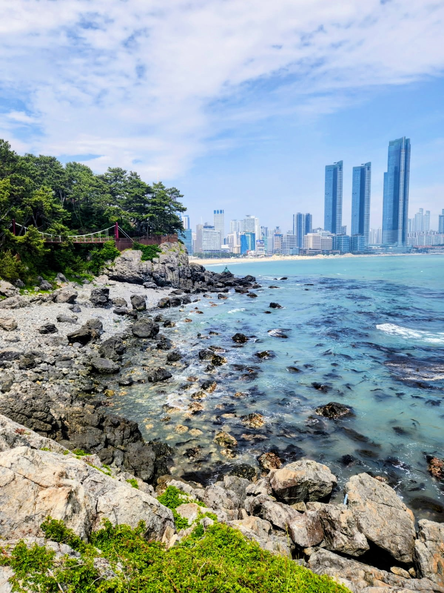

Korea
Got the chance to study abroad in Seoul, South Korea at Yonsei University. There I got to experiance the city life of Seoul, from the sites to the cuisine. One of my favorite parts was visiting both Busan (the city in the picture) and Jeju Island (the picture on my main profile page).
Hiking

One of my favorite outdoor activities when I have a free day on the weekend is to find a spot in the Green Mountains I haven't been and go hiking. My most recent hike was on Mt. Elmore where some of my friends and I camped at the State Park and hiked up to the fire tower at the top.
Skiing

In the winter, when the hiking trails are a bit too icy to hike, I usually am found skiing on the weekend. Currently and for the past few years I have been getting a season pass to Bolton Valley, which is perfect being only 30 minutes away from UVM, and if I am lucky sometimes there isn't a ton of people, making the slopes nice and the snow unbroken.